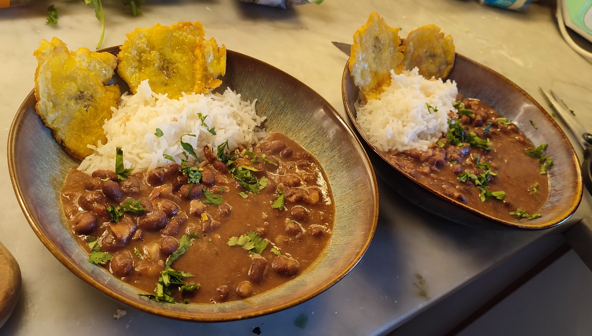

Combinado colombien
Ingredients
- haricots secs
- eau
- courge
- carotte
- huile
- 1 oignon
- 3 tomates
- coriandre
- sel
- bananes plantains vertes
- riz
- avocat
- tomates
- oignon
- ail en poudre
- piment
- citron
Haricots, riz, patacones, avocat et pico de gallo frais.
Préparation
Étape 1
Faire tremper les haricots secs.
Étape 2
Changer l’eau, puis couvrir les haricots de 3 doigts d’eau.
Étape 3
Ajouter de la courge, de la carotte et un filet d’huile.
Étape 4
Faire bouillir environ 1h.
Étape 5
À part, faire un sofrito avec 1 oignon et 3 tomates.
Étape 6
Ajouter le sofrito dans la marmite, avec de la coriandre et du sel.
Étape 7
Mixer la courge et la carotte avec un peu d’eau, puis remettre le tout dans la marmite.
Étape 8
Faire bouillir encore environ 1h, jusqu’à obtenir un bouillon épais et gélatineux.
Étape 9
Pour les patacones, couper des bananes plantains vertes en gros morceaux et les faire frire à feu doux.
Étape 10
Les aplatir, puis les faire frire à nouveau à feu vif. Saler.
Étape 11
Servir avec du riz, de l’avocat et un pico de gallo frais : tomates, oignon, coriandre, ail en poudre, piment, citron et un peu d’eau.
